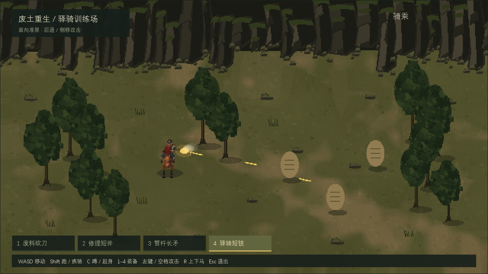
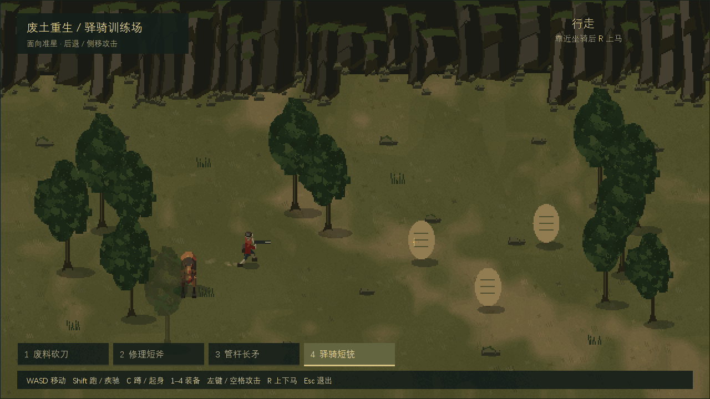
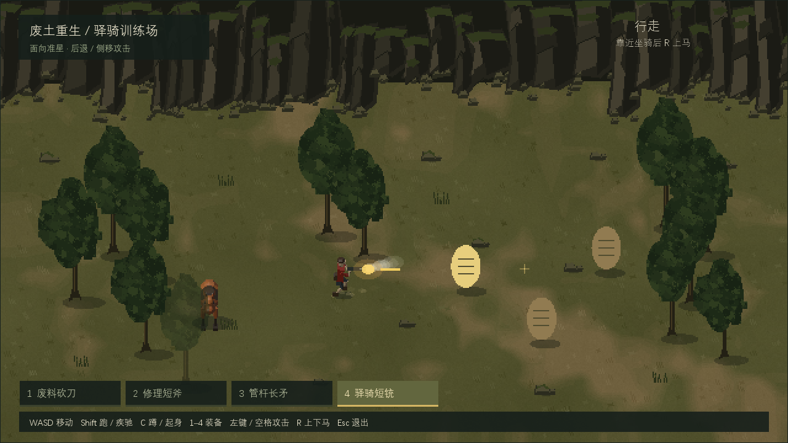
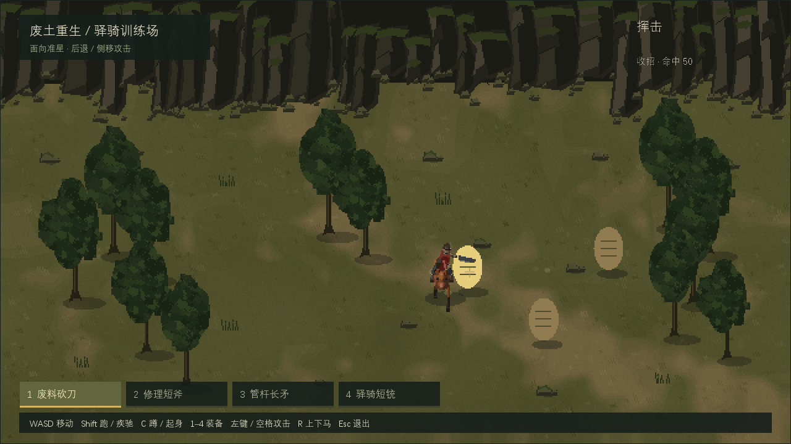

废土重生像素伪3D制作参考
这套参考记录《废土重生》当前小样的场景、人物、坐骑、装备和动画制作方法，以及已经遇到的问题与修复方式。适合希望制作同类斜俯视横屏游戏的美术、动画和程序人员。
可直接在线阅读本文与效果预览，也可下载离线分享包（ZIP，约 7.35 MiB）。解压后双击 index.html 即可离线阅读和播放 GIF，无须安装 Maker、Blender 或文档插件。发送给别人时请发送整个压缩包，保留 media 文件夹。四篇 Markdown 是可编辑的文字原稿。
阅读顺序
- 风格规范：场景与对象的形体、色彩、像素密度和动画表现。
- 实现流程：从离线三维母版到运行时二维图集，及移动、持械、骑乘契约。
- 问题与解决方案：症状、原因、正确修复和验收方式。
- 复用检查清单：把方法迁移到其他项目时先统一哪些约定。
当前效果


预览由当前 Runtime 的真实 GPU 截图组成，没有补帧或生成动作。片段之间省略等待时间，片段内按采集时序播放。GIF 最多保留 256 色，判断刃与材质颜色时优先看 PNG。
版本和验证范围
制作参考日期为 2026 年 10 月 9 日，对应游戏代码 adbd259。当前普通行走和跑步播放率分别为 16.2 和 21.6 帧每秒；水平普通移动约 143.88 和 235.61 逻辑像素每秒，比上一版同步降低 10%。战斗移动保持原节奏。
在 Windows 官方 Runtime 20260923-1717-bf3316f 中完成 31 组行为检查，并检查真实 GPU 走跑、后退、侧移、骑射和三种骑乘近战画面。手机触控、性能、显存和不同屏幕仍需真机验收。
分享包用于学习风格与实现方法，包含文档和精选效果预览；完整游戏源码、原始图集与 Blender 母版保留在项目中。源码入口为 research/pseudo3d-prototype/README.md，资产重建入口为 research/pseudo3d-prototype/assets/source/README.md。只拿到这个分享包的读者可以按流程重做自己的资产，不能直接运行该游戏小样。
这里的预览来自本项目制作资产，不包含最初参考视频、参考视频截图或第三方模型。
维护方法
改变相机、比例、图集布局、方向编号或动画节奏时，应同时更新风格规范、元数据契约和效果预览。先确认运行时行为与画面，再更新文档中的参数与版本，避免拿旧 GIF 证明新代码。
文档网页由 build-document.mjs 生成。维护者需要 Node.js 和 marked，可在自己的工具目录安装 marked 后，将其入口作为参数传入：
node build-document.mjs "path/to/marked/lib/marked.esm.js"
生成后的 index.html 与 reader.css 均为本地文件，阅读者不需要这些构建工具。
废土重生画面与动画制作规范
本规范描述《废土重生》当前视觉小样，可用于沟通风格、制作新素材及审阅效果。它提炼参考画面的视角、形体和配色规律，素材由本项目原创制作；不包含原始参考视频，也不据画面断言参考作品使用了哪种引擎。
本分享包只包含文档与精选媒体。文中的 research/pseudo3d-prototype/... 是完整项目内的定位信息，不代表包中附带源码、资产全集或可运行游戏。
1. 风格定义与制作方式
整体是固定斜俯视下的废土驿骑：暗橄榄草土、深绿长冠树群、暗褐棱角岩壁，红衣人物与橙褐马作为视觉中心。环境低对比，角色轮廓和装备动作优先可读。
人物、马和装备采用原创低模3D母版，在离线制作时按方向和姿态渲染成透明PNG；运行时只显示2D精灵及图层。地面、树和岩壁是程序化绘制的像素图，用面块、裂隙和明暗组织表现体积。它们都不是本小样运行时的实时3D模型。
“伪3D/2.5D”在这里指固定投影、二维平面移动、体积感精灵与前后遮挡的组合。角色可以自由前后左右移动；不是侧视平台玩法，也不能靠左右镜像代替完整多方向体积。
图中沙袋、准星和装备条是功能验证道具；正式关卡可替换，但应保留人物与环境的明度层次。
2. 镜头、像素与光照
表格较宽时，可左右滑动查看。
| 项目 | 当前制作标准 | 更换时的要求 |
|---|---|---|
| 投影 | 固定45度俯角、正交投影 | 改俯角或透视时重烘整组，不能倾斜单张精灵补偿 |
| 离线相机 | 母体相机 (0,-8,8)、正交范围4.6 |
同组人物、马、装备保持一致 |
| 母体坐标 | 地面X/Y、竖直Z；默认正面朝−Y | 和运行时屏幕坐标分开处理 |
| 世界缓冲 | 640×360，关闭边缘抗锯齿 | 地形、精灵和世界特效共用像素网格 |
| 标准窗口 | 1280×720、最近邻整数2倍显示 | 每个世界像素为2×2屏幕像素 |
| HUD | 窗口分辨率单独呈现 | 文字与准星保持清晰，不跟世界一起降采样 |
| 原生角色帧 | 128×128、RGBA、关闭渲染抗锯齿 | 透明边缘不带灰边，不能先渲染模糊图再仅开nearest |
| 离线照明 | Workbench材质色、统一Studio光、Standard变换 | 不逐方向改变灯光，不把烘焙阴影重复画到地面 |
1024×768窗口采用等比例留边，内容为1024×576。此时非整数放大会分配交替的1/2屏幕像素；锐利边缘仍应保留，但不称为严格2×2。
颜色必须检查最终GPU截图。末级采样和颜色转换不正确时，即使原生PNG很清晰，也会出现软边、泛灰或整体变亮。先修呈现链，再改美术；不可把加深贴图当作错误Gamma链的补偿。
3. 环境的形体与色彩
草土与裸地
地面由多尺度暗斑、有限色阶裸土、局部碎土和短草簇组成。裸地沿活动区域形成较窄、断续的土褐斑块，草土边缘交错；避免清晰圆帽、连续圆弧和均匀宽路带。
大面积地色变化可以柔和，但局部必须有可辨认的断边和2–5原生像素小簇。细颗粒低对比、疏密不一，不铺满等密度噪点，也不让地面变成模糊云纹。
树
树干细长，露出一段明确的干身，根部稍向外扩。树冠由数团纵向叶块互相咬合，外轮廓与下缘不规则；深色缝隙比大片亮面更重要。避免单个均匀球冠、粗圆柱树干和整排完全相同的树。
至少保留两种轮廓变体，配合少量尺度差异及树群重叠。较密树群放在场景边缘或局部区域，主要活动区留出角色和目标的可读空间。
当前遮挡方案是整棵树淡出至0.52，而不是树冠单独淡出或穿墙轮廓。树仍按脚点排序；需要轮廓透视效果时应另行验证平台与shader支持。
岩壁与碎石
岩壁要读成连续高墙：几组高低、宽度、进退和斜面不同的大块岩体，用深竖裂连接；顶部只有少量苔草，底部碎块与地面衔接。避免等高等宽的竖栏，也避免苔藓亮顶盖住岩面，使石墙读成草台。
当前岩壁是固定后景叠层，实体底缘为逻辑y202，角色最小活动脚点y220。它不是可以穿过、绕到背面或自动参与人物遮挡的前景实体。
小碎石和草簇采用稀疏点簇补充空间层次。石块有独立小阴影，草不画同样大小的黑椭圆。主体PNG不烘焙地面投影，避免双影。
表格较宽时，可左右滑动查看。
| 部位 | 当前源图RGB参考 | 使用原则 |
|---|---|---|
| 草土地色 | (79,79,43) |
暗橄榄，允许克制的局部明暗变化 |
| 裸土 | (111,96,62) |
土褐，与草地软交错而不发亮 |
| 树叶块 | (24,35,20) 至 (54,65,35) |
多暗缝、少量受光小面 |
| 岩面 | (27,27,21) 至 (68,63,48) |
深裂隙、大面块、有限亮面 |
| 人与马 | 红衣、深灰裤、橙褐马、深鬃尾 | 比背景更明确，不给环境同强度高饱和亮色 |
表中环境数值是PNG源色与范围，不是每处GPU像素必须等于它们；人物与马的材质色还会经过离线照明。
4. 人物、马与装备
人物比例和部件以小尺寸轮廓为准：头胸、裤腰、两腿和持握手必须分得开，不靠大量细纹理救轮廓。马有明确胸腹、长颈、近远侧腿和鬃尾；八方向必须呈现不同遮挡关系。
鞍垫贴合马背，座面边沿薄。裸马、骑乘、站骑和疾驰之间应保持同一鞍轮廓，避免下马后突然出现竖方箱。
三种近战装备应有不同剪影：砍刀有暗直背、亮凸长刃和弯尖；短斧有短柄、斧板和明确单刃外缘；管杆长矛有长杆与独立尖端。武器从真实手腕/握点生成，不能在屏幕上悬浮旋转。
砍刀与斧的板面属于真实挥击平面，切刃领先前下挥击。数学向量正确仍不足：在实际GPU尺寸下，刀背不能比磨刃更像锋刃；必须看前摇、接触和随挥连续帧，确认真正长刃入目标，而不只看刀尖或任意头部碰袋。
5. 动作规范
表格较宽时，可左右滑动查看。
| 动作 | 形体与行为 | 当前节奏 |
|---|---|---|
| 普通走路 | 低摆脚、较直支撑腿、小髋高变化 | 六关键帧、16.2帧/秒；横向约143.88逻辑像素/秒 |
| 普通跑步 | 较大步幅、明显屈膝回摆，比走路更有力度 | 六关键帧、21.6帧/秒；横向约235.61逻辑像素/秒 |
| 自然站立 | 独立并脚站姿，不冻结最大跨步帧 | 普通腿图集列6，仅idle使用 |
| 战斗走/跑 | 面向目标，腿按相对移动方向前进、后退或侧步 | 保持14/16帧/秒及原战斗步幅速度 |
| 蹲伏与蹲移 | 真屈髋屈膝、低重心；两脚小幅换相 | 两关键帧、6帧/秒，骑乘拒绝蹲伏 |
| 近战 | 蓄力→接触→回收，整招锁攻击方向，脚点仍可移动 | 六姿态，接触姿态索引2 |
| 马走与疾驰 | 走为较稳节奏，疾驰有收腿、伸展、落蹄、推蹬与腾空分相 | 骑手贴鞍并共享座位起伏 |
| 骑乘近战 | 座高专用上身，刀斧下劈、长矛下刺 | 马继续按输入移动，身体转幅受限 |
普通walk最高摆脚约0.027m、支撑膝内角约142–158度；run最高摆脚约0.162m、回摆膝可弯至约90度。这些是当前母版检查值，不是换身材后机械照抄的目标。
两张GPU静帧用于看姿态与场景比例；是否自然、足底是否漂移，要看同一动作的真实连续帧。
普通步态和战斗步态分开。普通face等于move；战斗face与move可以不同，但上下身仍同朝face，脚在face坐标系中按相对方向移动。不能把下身转到move而上身留在face，拼出180度腰扭，也不能倒播整身帧假装后退。
触地段脚端点应单调等距回扫，回摆段再抬脚。移动速度按真实触地跨度、帧率和地面投影换算；只增加角色位移、不匹配腿周期会滑步。普通走跑降速或提速时，应同时调整周期速率，战斗移动保持独立配置。
上身攻击不重置下身节拍；持续按住攻击、收招和冷却空档仍保持面向目标。站/蹲、上下马和换装有明确互斥规则，不用图像拉伸补动作缺口。

画面中的上身和持枪方向保持朝向目标；腿向后退，不把整人倒转。侧移同样保留人物身体朝向，只改变局部步轨迹。
6. 自然关节、握持与骑乘限制
当前人物上臂/前臂长0.30/0.29m，大腿/小腿长0.355/0.350m。肘膝内角限制25–170度，肩抬举限制170度。先约束真正手/脚端点，再生成关节和装备，不能只夹IK求解距离却仍画未限制的远端。
枪主掌与同轴支撑掌相距0.12m，矛双握距0.16m；两掌可达性校正时整组平移，保持轴与握距。刀斧至少主掌始终闭合在柄上。所有八方向、所有姿态都要检查实际骨段长度和角度极值，并实际查看最极端姿态。
骑乘身体相对马最多左右各90度，超范围不能扭到身后。骑近战开招锁face；马急转使身体越界时取消该招并保留冷却。马下身按移动方向，骑手上身按合法攻击方向，座位起伏同时作用于上身、枪掌及切刃点。
骑枪上身采用16个真实22.5度方向，马与驻马仍是八方向。枪管相对所选真实持握方向的余角限制24度；用真实主掌和当前座位偏移扫描合法姿态，避免用肩中心选方向造成近距接缝拒射。真正不可达的身后目标仍提示调整朝向。

骑乘近战必须用座高专用腕点与武器轴，使刀刃、斧刃或矛尖落入实际目标轮廓。只提高日志命中范围、取消骑乘拒绝或把整张站姿抬高，不算适配完成。
7. 制作与验收顺序
- 先锁相机、角色尺寸、足点、图集方向、共同髋接点和色彩呈现；与接入者书面确定metadata。
- 先做E/W侧面和S/N极值方向的少量原生帧，查看轮廓、腰缝、刃背、双掌与近远腿，不先盲烘全集。
- 对源几何测真实骨长、角度、握距、脚触地点与切刃位置；同时看最极端实际姿态。
- 样帧通过后只重烘涉及的资产组，打包、透明边界和裁切检查，并同步manifest、metadata与复建说明。
- 在真实运行时检查标准窗口、前后遮挡、普通/战斗切换、后退侧移、骑乘起伏、近角射击和目标接触。
- 用GPU连续帧展示真实动作；CPU状态标签可能比画面早，不以标签单独认定精确接触相位。确认画面、反馈和行为测试后再冻结交付。
8. 适用范围
当前已验证的是桌面官方Runtime中的视觉与交互小样。分享包中的图片是实际GPU截图；原生审阅页只能证明素材形体，不能替代运行效果。
预览为当前版本的213张真实GPU帧，1280×720、10.79秒，包含普通走跑、战斗移动、骑枪及三种骑近战。保留段内实际时间，移除采样窗口之间的长空档，不插帧。GIF仅256色；材质色与细边缘以本包PNG为准。
手机显存、发热、触控、真机横屏、目标平台shader与低端设备性能仍未实测。环境是固定整场图与后景边界，不是大型地图、可破坏山体或完整寻路系统。扩大世界或更换引擎时，请按复用检查表重新验证。
像素伪3D制作与运行实现
本文记录 adbd259 的可复用做法。文中路径均相对项目根目录；下文用“小样目录”指
research/pseudo3d-prototype/。阅读和复现不需要原始参考视频。
离线分享包以文档和精选画面为主；源码定位用于说明实现，不表示包内包含全部源码、资产或可执行程序。
执行下文命令需另有配套小样源码与完整资产。
1. 技术边界
当前方案是固定斜俯视的 2.5D 画面：离线建立有体积的低模母版，生成多方向动作 PNG，
运行时以 Lua、NanoVG 和 2D 图集合成。游戏不加载 .blend，也不实时计算角色骨骼。
真实体积、关节和自遮挡在烘焙阶段确定，运行时只选择帧、排列深度、移动脚点和绘制反馈。
小样直接使用已有官方 UrhoX Runtime，未绑定 Maker 项目，无平台身份和远端构建。 已验证的是 Windows 本地交互及 GPU 呈现；触控、手机显存、性能、完整战斗和联网均不在验证范围。
2. 资源与代码分工
表格较宽时，可左右滑动查看。
| 工作 | 小样目录内入口 | 产物/职责 |
|---|---|---|
| 基础人马母版 | assets/source/bake_sprites.py、model_parts.py |
多方向原生帧，透明背景，不烘地面影 |
| 武器与整身动作 | assets/source/bake_actions.py、action_pose.py、action_weapons.py |
握持、蓄力、接触和收招的母版 |
| 移动战斗分层 | assets/source/bake_combat_layers.py、combat_geometry.py |
face/relative 下身、持械上身、马与坐腿底层 |
| 普通走跑 | assets/source/bake_locomotion.py、normal_pose.py |
独立直腿走路、跑步和自然 idle |
| 骑乘近战 | assets/source/bake_mounted_melee.py、mounted_melee_pose.py |
座高下劈/下刺和真实切刃点 |
| 细分骑枪 | assets/source/bake_mounted_gun16.py |
真正 16 方向的身体/手姿 |
| 环境 | assets/source/bake_environment.py |
Pillow/NumPy 制作的地表、树、岩壁和小景物 |
| 图集与数据 | assets/source/pack_*.py、write_combat_metadata.py |
PNG、manifest、手锚、步幅、座位偏移 |
| 运行时 | scripts/main.lua、actions.lua、combat.lua |
输入、状态推进、攻击时序与命中 |
| 呈现 | scripts/pixel.lua、renderer.lua、presentation.lua |
像素世界、清晰 HUD 和颜色适配 |
母版通过独立后台 Blender 创建，不依赖用户活动场景。脚本、源模型和报告应一起归档；
只有 PNG 不足以恢复关节、相机、武器刃向或分层接缝。生成目录和具体命令见 assets/source/README.md。
该说明包含演进阶段记录；当前播放参数以 scripts/config.lua 为准。
3. 相机、像素与坐标契约
离线相机采用固定 45° 俯角、正交投影。所有同场资产共用相机、尺度、灯光和脚锚。 修改相机角度应整组重烘，不能旋转某张 PNG 来假装新的 3D 视角。
运行时逻辑场地为 1280×720，世界缓冲为 640×360。逻辑纵向地面压缩系数为 0.66。
方向编号从 0 开始：下、右下、右、右上、上、左上、左、左下。
图集行列从 0 开始；Lua 元数据用 direction+1、frame+1 访问。
表格较宽时，可左右滑动查看。
| 资产 | 单格/图集 | 脚锚 | 使用约束 |
|---|---|---|---|
| 旧完整主体 | 256 格，6 列×8 行 | (128,220) |
原生 128 格最近邻放回 256；当前独立马仍使用 |
| 分层上身 | 原生 128 格 | (64,110) |
近战攻击 6 列；步行 hold 两列为站/蹲 |
| 战斗下身 | 原生 64 格 | (32,46) |
walk/run 6 列，crouch 2 列；每模式 8 张 relative 图 |
| 普通下身 | 448×512，64 格、7 列×8 行 |
(32,46) |
列 0–5 循环，列 6 是独立 idle |
| 骑乘底层 | 128 格，6 列×8 行 | (64,110) |
马、pelvis、坐腿一起烘焙；行对应 move |
| 骑枪上身 | 256×1024，128 格、2 列×8 行 |
(64,110) |
pose 0–15：列 pose%2，行 floor(pose/2) |
| 骑近战上身 | 128 格，hold 1 列/attack 6 列×8 行 | (64,110) |
三武器独立图，行对应锁定的攻击方向 |
原生分层素材显示倍率为 2×humanScale 或 2×actorScale；当前分别是 1.68、1.72。
上身与下身共用同一个地面脚点，不把锚点迁到某一帧最前脚趾。
下身裁切来自原生 128 图的 (32,64,96,128) 区域，因此局部锚为 (32,46)。
4. 深度、阴影与分层
world.lua 将人物、未骑乘马、树、小景物和训练袋按脚点 y 从小到大绘制。
人物上下身必须作为同一个深度对象相邻绘制，不能分别插入排序队列。
地表先画，阴影独立画；环境和主体不带烘焙地面影，以免双影或换姿态时影跳。
environment.lua 使用树轮廓范围判断角色或马是否被挡，淡出的是整棵树。
当前树冠检测高度 208、半宽 48，再乘实例与全局树缩放；这是一种近似区域判断，不是像素级遮挡。
透明岩壁作为后景：逻辑图 1280×260 的实际实体底缘为 y202，早于最小活动脚点 y220。
移植为可穿行前景墙时，必须新增脚点排序或碰撞，不能沿用后景规则。
整场地表图不是可平铺纹理；扩大场景需重新制作地块系统。
下马后人物与马为两个实体：马留在原地，人物偏移到旁边；走近至 85 逻辑单位内可重骑。
当前下马偏移为 (72,12)，位置受地面边界约束。马有独立阴影与遮挡，不能在下马时删除马。
5. 面向、移动与攻击的独立状态
faceDirection 是人物/近战上身的面向，moveDirection 是原输入移动方向。
步行上下身都按 face 绘制，下身文件使用 relative=(move-face)%8：0 前进、4 后退、2/6 侧移。
这些是实际烘焙的后退/侧步轨迹，不能将腿转到 move 方向或倒播整身动画代替。
近战每招开招锁定 attack.direction，脚点仍按输入移动；contact 使用该帧移动后的脚点。 枪持续按住期间，包括射击节流空档，保持准星朝向。近战持续按住、收招和冷却也保持战斗步态。 上身 attack.elapsed 与下身 locomotionTime 分开，开始下一招不把腿重置到第 0 帧。 同一移动模式切普通/战斗时，按旧 rate/新 rate 重标时间以保留循环相位。
每帧核心顺序为：推进特效 → 输入/演示移动与瞄准 → 接触/冷却判定 → 动作节拍。 若把 contact 放在输入移动之前，会使用前一帧脚点，造成“已经进圈却没命中”。 攻击期间拒绝换装和上下马；蹲姿近战先起身，骑乘拒绝蹲伏。
6. 普通走跑与战斗步态
普通步态只用于步行、非蹲伏且不处于战斗的状态。
战斗判据覆盖 attackRequested、combatFacing、attack 对象及尚未结束的近战冷却。
普通走路使用较低抬脚、动态髋高和较直的支撑膝；跑步使用更大摆幅和抬脚。
普通触地相位为 (-1,-1/3,1/3,1,1/3,-1/3)，支撑回扫三段等距，避免匀速角色配不匀脚步。
表格较宽时，可左右滑动查看。
| 当前播放参数 | 值 | 备注 |
|---|---|---|
| 普通 walk/run rate | 16.2 / 21.6 FPS |
当前 adbd259；不使用源说明的历史 18/24 |
| 普通横向 walk/run 速度 | 143.88192 / 235.605888 |
逻辑单位/秒；由实际步幅派生 |
| 战斗 walk/run/crouch rate | 14 / 16 / 6 FPS |
保留原战斗节拍 |
| 战斗横向前走/后退速度 | 87.2592 / 68.06688 |
后退短步幅自然更慢 |
| 战斗横向跑速度 | 164.55936 |
普通提速不改变攻击移动 |
| 骑乘 walk/gallop 速度 | 250 / 390 |
独立于人物步幅计算 |
Actions.Speed 根据元数据计算速度，而不是直接使用配置中的旧 fallback 速度：
projection = sqrt(sin(moveAngle)^2 + (0.66*cos(moveAngle))^2)
speed = nativeSpan * displayScale * frameRate / groundFrames / projection
locomotion-meta.lua 提供普通 stride/upperOffsets；combat-handmeta.lua 提供旧战斗 stride。
普通纵向/斜向速度由其各方向数据决定，表中的精确值仅代表横向。
动态髋偏移要同时作用于上身和真实主掌/枪原点；只移动图片会让枪脱手。
7. 关节与装备限制
action_pose.py 先把真实腕/脚端点约束到双骨关节内角 25–170° 的可达壳，再构造肘/膝。
只夹求解器的距离而不移动实际端点，会生成不真实的骨长。
双握装备必须整体平移主握与支撑握保持同轴；无法满足可达范围则明确报错。
相关报告测量实际渲染端点和骨长，不只检查参数。
砍刀、斧、矛与近战手臂一体烘焙。切刃检查使用真正长刃/斧外缘/矛尖，不能用刀背或任意最远点。
刀背暗、磨刃亮是辨识辅助；真正刃向仍由局部武器平面与接触轨迹确定。
枪管由运行时从真实主掌叠加。主握与支撑握距 .12m，掌半径 .05m，相对身体方向余角限 24°。
其支撑偏移约 .0499m，不是允许无限旋枪；枪元数据不再使用双腕平均中心。
8. 骑乘攻击与 16 向骑枪
马与坐腿底层按 move 绘制，上身按合法目标面向绘制；马保持原输入方向，不为了瞄准自动倒走。
骑手身体相对马最多左右 90°。近战每招锁八向，急转超过限制时取消挥击、提示并保留冷却，禁止取消后补命中。
骑近战为座高 1.53m 的专用下劈/下刺，不能简单把站立攻击贴高。
当前刀/斧/矛骑乘 reach 为 50/47/76，步行仍为 55/50/84。
命中先检查当前脚点地面扇区，再将 mounted-melee-meta.lua 的真实 contact2 切刃点
加实时 seatOffset，检查是否落入训练袋椭圆。袋中心高 37、半径 (24,35)；其他目标形状需重新定义。
当前 timing 为刀 .60/.24/.74、斧 .82/.34/1.00、矛 .64/.26/.80 秒，分别代表 duration/contact/cooldown。
骑枪私有 mountedGunPose 采用 16 个真实 22.5° 身体姿态，原 face/move 八向合同不变。
选择器扫描相对马不超过 90° 的候选，以每个候选真实主掌和当前座位升降求最小枪管余角。
绘制、枪原点和角度检查使用同一细分姿态。合法侧向身体可再使用 24° 的枪管余角，
因此射界不是按旧肩部参考点强行截断的总 90°；真正不可达的背后目标提示并拒射。
释放攻击、换装或上下马必须清理该私有姿态。
9. 世界与 HUD 的呈现链
世界 PNG 以 NVG_IMAGE_NEAREST 加载，NanoVG 世界 context 用 nvgCreate(0) 关闭边缘 AA。
Texture2D 创建 RGBA render target、单级 mip、FILTER_NEAREST，绘入 640×360 世界。
原生 BorderImage 最近邻放大；HUD 使用窗口尺寸透明 RT、独立 context 和上层面板。
两面板采用预乘 alpha 混合。标准 1280×720 是严格 2×2 像素；1024×768 适配为 1024×576，
上下各留边 96，非整数采样会交替分配 1/2 个屏幕像素。
viewport.lua 结果同时用于面板与鼠标映射；ui:GetScale() 是 Vector2，要分别处理 x/y。
当前 Runtime 的默认 UI shader 会对已经为显示 RGB 的 NanoVG RT 再编码一次 Gamma。
presentation.lua 注册项目局部 scripts/rendering/Shaders/BLGL/UI.glsl，保留 SDK 分支，
省去不需要的末级编码，并显式 reload 资源及 shaders。PNG 和 palette 不做反向补偿。
这适用于该独立进程的两个 RT 面板；不能无审查推广给同时显示普通线性资源的 UI。
退出恢复资源搜索优先级与缓存路径；已加入目录和已载 shader 留到该进程退出才释放。
10. 复现与迁移顺序
- 保存小样的 scripts、assets、source、manifest 和 shader；使用相同固定相机合同。
- 先用已有 PNG 启动新项目的最小静态场景，验证锚点、颜色、nearest、HUD 和留边。
- 接 depth/独立马/阴影，再接 face/move、独立腿相位和真实手锚；不要一次改所有约定。
- 逐项移植普通 stride、座位偏移、骑乘 cut 点与 16 向枪；调整相机或比例后重新生成元数据。
- 最后重建业务状态、目标形状和碰撞，保留行为测试并用新项目 GPU 连帧验收。
进入小样目录，安装/提供兼容的官方 Runtime 后运行：
.\launch-prototype.ps1 -Mode Test
.\launch-prototype.ps1 -Mode Capture
.\launch-prototype.ps1 -Mode Interactive
可用 -RuntimePath 指定自行安装的 Runtime 可执行文件；不借用其他项目的身份或配置。
当前验收版本为 20260923-1717-bf3316f。本分享包不包含官方 Runtime 安装库。
需要重烘时，先做 samples，再做完整图集；下面以小样目录为当前目录，blender 指已安装的 Blender：
母版脚本需要 Blender 自带 Python/bpy；普通打包和环境脚本使用具备 Pillow、NumPy 的 Python。
这些工具属于制作依赖，游戏启动无需 Blender。
blender --background --factory-startup --python assets/source/bake_locomotion.py -- --samples
blender --background --factory-startup --python assets/source/bake_locomotion.py
python assets/source/pack_locomotion.py
combat、mounted melee 和 gun16 使用各自 bake/pack 入口，命令见 assets/source/README.md。
不要把 samples 当完整运行资产。固定母版、相机、PNG 和相应 metadata 必须来自同一生成版本。
当前日志实录有 31/31 Runtime 行为检查；GPU 截图与连续序列验证动作、握持、颜色和命中。
截图 CPU marker 存在呈现延迟，不能宣称它就是画面准确相位。诊断方法见 troubleshooting.md。
像素伪3D问题修复与回归方法
本文基于 adbd259 的当前实现，路径均相对项目根目录；“小样目录”为
research/pseudo3d-prototype/。每条解决方案有适用边界，移植时应以新 Runtime 的实际画面复验。
不需要原始参考视频即可复现下列技术检查。
1. 离线图清晰，游戏却发糊
现象：树、角色、地面斜边都被抹软，HUD 仍清楚。
诊断：透明边缘与整数 nearest 打包已经正确，问题在世界 RT 的末级放大。
此前 nvgCreateVideo 包装后以 imagePattern 呈现，设置源 Texture2D nearest 没有解决实际 GPU 模糊。
不能给只支持两参数的绑定擅自增加 image flags 参数。
当前修复：世界 640×360 RT、单级 mip、FILTER_NEAREST，由原生 BorderImage 呈现；
HUD 独立窗口尺寸透明 RT。世界 nvgCreate(0)，素材 NVG_IMAGE_NEAREST。
资产本身是原生低分辨率、关闭 AA 的真实重渲染，不是只对平滑图片打 nearest 标签。
复验：1280×720 下检查全场斜边与透明轮廓为硬像素；对稳定区域检查 2×2 块一致性，
排除运动、烟雾透明叠加等会改变颜色的区域。非整数窗口不要求每块尺寸一致。
对应 scripts/pixel.lua、renderer.lua、viewport.lua 和资产 alpha 报告。
2. 像素太粗，或小窗口留边后输入偏移
从旧 320×180/4×4 颗粒调整为当前 640×360/2×2，同时主体原生从 64 改为 128； 不能仅放大低清图片期待细节恢复。逻辑场地和脚锚保持不变。 其他窗口等比例 fit、nearest，而非强制只使用整数倍率导致场地过小。
视口位置、画面尺寸、鼠标转换必须共用 viewport.lua。
1024×768 的世界是 1024×576、上下各 96 留边；点击装备栏要消费攻击输入。
ui:GetScale() 返回 Vector2；将它当数字除数会引发 vector2 expected, got number 并留下空窗。
当前 pixel.lua 分别使用 .x/.y；初始化/resize 失败释放资源、明确报错并退出。
3. 最近邻修好了，但整场灰亮
现象：空地原 RGB (96,108,72) 变为 (165,174,145)，裸土也整体提亮。
其关系符合显示 RGB 被当线性值再次 Gamma 编码。
诊断：核对官方 UI、NanoVGFill 与 GammaCorrection shader，默认 UI 的最终编码分支 与 RT 中已有显示颜色重复。Graphics sRGB 状态、Texture SetSRGB 或仅 context 色空间试验 未解决本次实际输出。必须看 GPU 色值，不能把 flag 改成功当修复。
当前修复：scripts/rendering/Shaders/BLGL/UI.glsl 是已验收官方版本的局部适配，
只省去最终编码。presentation.lua 设置本进程目录优先和项目缓存目录，显式 reload 两种
资源名形式及 renderer shaders。PNG/palette 未为管线错误降色。
曾遇回归：只读到 marker 只能证明资源加载，旧已编译 shader 仍可能生效。
拆出的采样 helper 必须置于 COMPILEPS，再按 DIFFMAP/ALPHAMAP 守卫，
否则 vertex 或纯色变体会引用未声明的 sDiffMap。
复验：用 scripts/color-probe.lua 的短 GPU 入口查看空地、裸土及 HUD 色值，
随后跑正式 Capture；草地应恢复 (96,108,72)，土色约 (154,141,96)，
边缘仍硬且 HUD 无残影。环境后续变色时应比对新源 PNG，而不是机械套用这些旧色值。
本次适配针对独立 Runtime 的 RT 面板，不是通用 UI 色空间标准；升级或换后端要重新核查。
4. 地面凹形路径变成矩形铺面
此前离屏路径缺少所需 stencil 支持时，非凸填充实际出现包围盒铺面。 修复方向是显式满足目标附件需求，或拆凸三角形；当前环境直接使用原创 bitmap 地表， 绕开凹路径填充依赖。不要在无附件证据时重新引入复杂非凸 NanoVG 路径。 扩大场景要做地块资源与边缘接缝，当前整场图不可直接作为无缝 tile。
5. 下马后马消失，或人马始终叠在一起
原因是骑乘合体画面被当成唯一实体，下马仅切人物图而没有保留马状态。
scripts/mount.lua 将独立马位置与骑乘同步；下马停留、偏移人物，再分别深度排序和画阴影。
当前人物偏移 (72,12)，避免上下马所需视觉间距过小。接近 85 范围可重骑，远处不传送。
回归检查：人走远马不跟、远处 R 被拒、返回可重骑、重复循环、四角边界下马、 人马各自树遮挡与阴影。不要只检查“有 horse PNG 文件”。
6. 攻击时停脚，或左移右击却转身向左
旧攻击脚点锁与共用 direction 无法表现后退/侧移。
当前 faceDirection/moveDirection 分开；近战单招锁 face，腿按 (move-face)%8 播放真后退/侧步。
上下身仍面向同一 face，不能把腿反向旋转成扭腰。枪按住含节流空档持续朝准星，
近战按住含冷却空档保持战斗面向。
Actions.Update 只管理独立腿相位，换招不重置；同模式换 rate 重标时间保持相位。
main.lua 先移动，再做 contact；开招位置快照不是最终命中依据。
回归：右面左退、左右侧移、8 relative、持续跨冷却、移动入圈命中/退圈不命中、
contact 只一次、换装/R 拒绝、装备栏鼠标点击不同时攻击。
7. 普通走路像跑步，或只提速度却滑步
固定战斗低髋与较高抬脚不适合作普通自然行走。
当前 normal_pose.py 另做普通直支撑腿与动态髋，walk 抬脚低、run 摆幅更大；
触地回扫三段等距。idle 是第七列，不从最远跨步帧截取静止姿势。
Runtime 普通 rate 是 16.2/21.6，当前横向速度是 143.88192/235.605888。
源制作说明中的设计 18/24、约160/262不是最新播放值，复制配置时以 scripts/config.lua 为准。
速度根据实际落地 span、groundFrames、显示倍率和地面投影派生，减慢步频同时降低位移。
战斗仍用原 14/16/6FPS 和原 stride；持续攻击、收招、冷却不能偷偷切成普通快步。
回归：普通走快于战斗走，跑明显快于走；原前走87.2592/后退68.06688不变； 首个攻击帧立即用战斗步态；结束后恢复普通但相位不跳。 普通 upperOffset 要同时移动上身与手锚，否则髋变化正确、枪却浮在旧位置。
8. 枪离手、两手拉长，或角度限制仍挡不住扭曲
旧两腕中心/固定肩高公式不等于实际主握点。
当前 hand-meta.lua 使用烘焙真实主掌，加与渲染完全相同的髋/seatOffset。
近战武器附真实腕一体烘焙；枪主握和同轴支撑握距 .12m，掌半径 .05m，余角限 24°。
IK 先约束实际端点，再生成骨段与装备；双掌修正保持刚性轴，无法同时可达则报错。 只夹 distance、保留旧腕点会产生假骨长；只画短连线也不能掩盖手柄脱掌。 看源关节极值页与报告，再看 Runtime 八向和移动升降，脚本检查不能代替画面。
9. 砍刀/斧背向目标，却有命中反馈
根因可能是武器板面/柄轴/宽轴的局部框架错了，或 reach 取了刀背最远点。 修复在母版里确定真实挥砍平面、刃宽方向与轨迹；磨刃带厚度避免共面闪烁。 砍刀直背暗、长切刃亮；报告只取真实切刃，不能用尖端、背部或任意头部顶点自证。
定向 bake/repack 相应装备，不重烘无关马/环境；同时刷新 PNG、manifest 和 reach 元数据。
回归必须看 windup→contact→recovery 连续 GPU 帧中哪一条边真正进入袋轮廓。
仅出现 PROTOTYPE_HIT 不足以证明刀刃正确；材质亮边也不能替代几何刃向。
10. 骑近战按不出来，或武器在袋上方仍判命中
删除 mounted 拒绝没有座高适配，旧站立攻击也不能直接上移充数。
当前三武器用专门骑上身/下劈/下刺，和马坐腿底层共脚点。
mounted-melee-meta.lua 是数字数组 cuts[equipmentIndex][direction+1]，不要按武器 id 字串读取。
刀/斧/矛 mountedReach 为50/47/76；contact 用当帧脚点扇区加真实刃点/seatOffset 目标轮廓校验。
马可继续250/390移动；锁定攻击面向后，马急转导致身体扭角超过90°时取消招式并保留冷却， 不自动改变马方向，不夹视觉 face 却继续以旧 attack.direction 命中。 回归：三武器侧攻命中、后方拒绝、行进 contact、急转取消无后续 hit、坐位升降接缝一致。 当前目标轮廓是训练袋椭圆；对不同敌人体型需要新的接触区域。
11. 骑枪站着也时射时不射
第一层原因：旧肩高64选八向，随后真实主掌+seat 点检查24°，两原点不同导致选错姿态。 第二层原因：即使扫描8真手点，近距量化缝也可能所有候选都超24°。 扩大掌半径或枪管角度会掩盖握持问题，不是本次解决方案。
当前仅骑枪新增真16方向 body，22.5°一行姿态，不旋转 PNG；合法 body≤90°候选
按当前实际手点求最小 barrel 残差，再用同一姿态绘制和发射。horse/relative/近战仍8向。
合法侧向身体可带24°自然手握余角，正后方仍拒射并有提示；不再使用旧肩点总90°硬 gate。
释放/换装/R清理私有 mountedGunPose，避免下一种武器沿用枪姿态。
源手点报告52128个前向近64/中200/远500样例0拒、最大残差14.431°；
Runtime选择器另有5616个静止/走/疾驰/八马向/接缝样例，不能把源扫描替代运行时测试。
回归还要按住近距接缝跨多个 .15s 射击间隔，检查计数增长和真 GPU 枪手位置。
源手点报告限定目标弧和距离；不能据此承诺任意贴身目标或所有后方目标可射。
12. hit 快照显示蓄力，日志却已命中
NanoVG 离屏→UI 呈现与 TakeScreenShot 读回有延迟。
当前在推进下一次模拟前采样，并对命中快照延迟 contact 后 .08s；它是实用证据选择，
不是引擎级相位同步保证。manifest 明确 presentationMayLag=true。
CPU face/move/legFrame/位置/gunPose 标记不能冒充截图里准确 GPU 动画相位。
验收看袋 flash、HUD累计数和连续帧中的真实接触；GIF只由这些GPU截图按序导出， 不补绘动作。新版证据使用独立目录，正式Capture不在资产或脚本仍修改时启动。 launcher要求本次日志包含fresh capture markers，不能把上一次同名PNG当成功证据。
13. 可重复验收与范围
进入小样目录运行 launch-prototype.ps1 -Mode Test 与 -Mode Capture。
当前要求 TEST_COMPLETE groups=31 passed=31；演示约39秒，13张命名快照，
短窗请求24FPS、序列上限400，并输出模拟marker。请求频率不是稳定设备帧率承诺。
31组涵盖原马/遮挡/输入、攻击节流和方向、步态分离、真手锚及新增骑乘行为。
Windows输入检查使用适配数据，并未注入真实OS鼠标键盘；触控和真机未验证。
初始化或中途加载失败需释放部分创建的图集、context、RT并退出，避免空窗常驻。
Pixel.Release 支持部分初始化与重复调用。局部shader目录无法从已运行cache完全撤销，
退出只恢复搜索优先级和缓存目录；目录及已加载shader随独立进程退出释放。
验收 Runtime 20260923-1717-bf3316f 的既有 DaySpecularHDR/themis_x64缺失日志应与
本任务Lua/UI shader错误分开记录；不能把31/31测试写成全引擎无错误。
离线分享保存版本、源码/PNG合同与可读文档，不包含凭证、项目身份、原始视频或官方Runtime安装库。
换相机、换GPU后端、换目标形状或升级Runtime都需要新的真实GPU验收。
复用与交付检查表
用于把当前废土驿骑风格带到另一个场景或项目。先读制作规范，再配合实现说明和问题方案。本包只含文档和精选媒体；以下代码路径是完整项目内的定位信息，不是包内下载链接。
1. 接手前确认范围
- 选择固定斜俯视、二维平面自由移动；明确人物/马离线3D母版烘PNG、运行时2D分层。
- 不把本小样写成运行时3D骨骼游戏，也不声称已经确认参考作品的引擎或源码。
- 核对需要哪些运行资产、哪些只是旧版本/审阅帧；不用旧整身持武器图集和新上下身层同时常驻。
- 明确素材重建者、接入者和验收者的文件所有权；共同图集、metadata和相机一次只由一人修改。
- 分享包不加入原始参考视频、本机目录、账号身份或其他项目的活动场景；新素材不从视频抠图。
2. 图集与坐标合同
方向索引统一为：0 S、1 SE、2 E、3 NE、4 N、5 NW、6 W、7 SW。列和方向为零起始；Lua数组读取时加1。母体地面为X/Y、高度为Z，运行时位置是逻辑屏幕脚点，两者不能直接互换。
表格较宽时，可左右滑动查看。
| 资源组 | 格子与布局 | 脚点/缩放 | 必须同时读取的数据 |
|---|---|---|---|
普通腿 normal-legs-walk/run.png |
cell64；7列×8face，448×512 | anchor(32,46)，人物scale1.68 | locomotion-meta.lua |
战斗腿 combat-legs-{walk,run,crouch}-r0..7.png |
cell64；走跑6列、蹲2列，8face | anchor(32,46)，scale1.68 | combat-handmeta.lua stride |
地面上身 combat-{gun,machete,axe,spear}-hold.png |
cell128；2列站/蹲×8face | anchor(64,110)，scale1.68 | 真实gun主/支撑掌与共同hip |
地面近战 combat-{weapon}-attack.png |
cell128；6列×8face | anchor(64,110)，scale1.68 | combat-reach.json |
骑乘下身 mounted-base.png、mounted-run-base.png |
cell128；6列×8move | anchor(64,110)，scale1.72 | mountedSeatOffsets |
骑枪 mounted-gun-upper16.png |
cell128；2列×8行，共16姿态 | anchor(64,110)，scale1.72 | mounted-gun16-meta.lua |
骑近战 mounted-{weapon}-hold/attack.png |
cell128；hold1列、attack6列×8face | anchor(64,110)，scale1.72 | mounted-melee-meta.lua、reach |
独立驻马 horse-atlas.png |
6列×8方向；128原生帧最近邻装入256格 | packed anchor(128,220)，scale0.86 | 原马图集manifest |
人物新层直接加载原生PNG，scale1.68等于旧“逻辑2倍×人物0.84”；骑乘scale1.72等于“2倍×0.86”。不要因为格子已经是128，又先放回256再重复乘2。
- 普通列0–5循环；列6是idle，不参与走跑循环。普通face=move，只需八向前进，不复制战斗的64种面向与相对移动组合。
- 战斗相对方向
relative=(moveDir-faceDir)%8；文件r索引是relative，行是face，不能以move行取人物腿。 - 下身原生crop为
(32,64,96,128)；crop后anchor(32,46)与全128上身anchor(64,110)数学一致。 - 裤腰/pelvis归下身，上身衣摆留短重叠；上下身共享脚点，作为同一深度对象相邻绘制。
- 站立战斗hip0.74m、蹲hip0.43m/hipY0.10m、骑乘座高1.53m；不得把普通高髋偏移误用于攻击。
-
upperOffsets[mode][face+1][frame+1]同时平移普通上身和真实枪掌；idle也读取第7项。 -
mountedSeatOffsets[walk/run][move+1][frame+1]同时作用于骑上身、真实枪掌和切刃点。 - 骑枪pose0–15真实角度每22.5度：
col=pose%2、row=floor(pose/2)；16姿态不能当两帧动画。 -
cuts[equipment][direction+1]为原生真实切刃contact2点；当前equipment已从1起，1刀/2斧/3矛，不能再次加1。 - 手锚来自真实主掌，不使用两腕平均值或猜测肩高；支撑掌与主掌同刚性轴。
完整项目定位：research/pseudo3d-prototype/assets/ 下的 combat-manifest.json、locomotion-manifest.json、mounted-melee-manifest.json、mounted-gun16-manifest.json。
3. 环境与排序合同
表格较宽时，可左右滑动查看。
| 环境资源 | 原生/已封装尺寸 | 放置与限制 |
|---|---|---|
environment-ground.png |
原生640×360，装入1280×720 | 不透明整场板，非平铺tile |
environment-cliff.png |
原生640×130，装入1280×260 | 固定后景(0,0)，实体底缘y202，脚点活动起点y220 |
environment-tree-a/b.png |
原生128×128，装入256×256 | packed脚锚(128,220)，两种长冠细干变体 |
environment-props.png |
3个原生32×32格，装入64×64格 | packed脚锚(32,56)，石簇/草/苔石 |
- 人、马、树和可排序小石按脚点Y绘制；角色上身不能独立排到另一棵树前后。
- 高度影响上身、手、切刃投影，不能拿带高度的screen-y直接当水平命中半径。
- 阴影单独绘制；不在sprite里重复烘地面投影。草簇不要套石块大小的阴影。
- 当前遮挡是整棵树淡出到0.52。若替换为树冠淡出或穿墙轮廓，重新检查实际透明边界、排序和平台支持。
- 扩地图时把整场地面改为正式地块方案；岩壁要进入活动区时增加前后排序/碰撞，而非仅下移后景PNG。
- 新环境采用独立
environment-文件名和manifest，避免旧人物/树打包命令把环境树覆盖回球冠。
4. 像素与颜色呈现
- 世界640×360、无边缘抗锯齿；源PNG透明通道为0/255，边缘无灰色半透明圈。
- PNG采样和世界缓冲最终显示都用最近邻。仅设置纹理filter、不查末级显示采样不够。
- 1280×720确认严格2×2块；其他窗口等比例适配并检查留边、鼠标/准星坐标映射。
- HUD使用窗口分辨率层，透明混合正确，无残影、黑底或软文字。
- 对固定地面点比对源图与最终GPU颜色，检查重复Gamma转换；不通过整体改palette补偿错误管线。
- 更换Runtime后重新验证局部UI shader的分支与接口；桌面修色方案不能直接宣称全平台可用。
完整项目定位：research/pseudo3d-prototype/scripts/config.lua、pixel.lua 及 rendering/。具体呈现链见实现说明。
5. 走跑与移动攻击
- 当前普通走跑以Runtime配置16.2/21.6帧每秒为准；源制作脚本中的18/24是先前设计参数，不能当最终播放速率。
- 横向普通走约143.88、跑235.61逻辑像素/秒；战斗走/跑/蹲14/16/6帧每秒保持独立。
- 用真实触地跨度换算位移；基本关系为
画面速度=span_native×显示scale×rate/groundFrames，再按地面方向投影还原世界输入速度。 - 当前普通触地三段等距：walk每段0.19m、run每段约0.233333m；不改成触地段来回摆动的正弦轨迹。
- walk低摆脚、较直支撑腿；run更大步幅和屈膝回摆。不是同六帧换个名字或单纯加速。
- 后退/侧移按face局部脚轨迹制作；上身和下身都面向face，不把腰扭到move方向。
- 攻击、收招、持续按住和冷却不重置下身节拍；进入/退出普通移动保留循环相位。
- 每招近战锁face，脚点可以移动；接触使用当帧脚点。移入射程可命中，移出不能命中。
- 蹲态近战起身；攻击期间换装、蹲伏、上下马规则明确；骑乘蹲伏拒绝。
6. 关节与装备可达性
- 双骨端点先受限，几何使用受限后的真实端点；不只限制IK distance却仍画到原远端。
- 当前上臂/前臂0.30/0.29m，大腿/小腿0.355/0.350m；新身材重新确定骨长，不能拉长下段追目标。
- 肘/膝内角25–170度，肩抬举≤170度；测实际start→joint和joint→wrist/foot，并定位最小/最大角的具体姿态。
- 枪双握距0.12m、矛0.16m；双手校正时保持整握框架与同轴关系，不能枪/矛仍画在未限制的腕点。
- 刀斧主掌闭合柄；磨刃带、刀背、斧刃在S/SE/E/NE/N及另一侧实际可读，无裁边。
- 砍刀下切长刃迎目标，刀背暗、刃线亮；检查真实GPU前摇→接触→随挥，不能只凭向量点积判通过。
- 先约束腕和膝，再校真实reach；不通过扩大攻击判定掩盖武器够不到目标。
7. 骑乘攻击与独立马
- 马+pelvis/腿按move，骑上身按合法face；身体相对马不超过左右90度，不自动把马倒向准星。
- 骑枪扫描16真实身体姿态，按当前主掌、seatOffset计算目标射线；barrel余角≤24度，不放宽到任意360度。
- 近64、中200、远500目标，在8马向、静止及走/疾驰12起伏相位检查合法方向接缝；看实际连发，不能只看一次日志成功。
- 真正不可达的背后目标提示并拒射；释放攻击、换装和上下马清理骑枪私有姿态。
- 骑刀/斧/矛使用座高专用hold与attack，不能骑着仍显示枪上身，或只取消骑近战拒绝。
- 真切刃点加seatOffset后落入目标轮廓，再结合地面扇区判命中；看刃/尖入袋、flash与计数共同证据。
- 骑近战锁单招face，马可继续移动；马急转超90度时取消该招、提示并保留冷却。
- 下马后马为独立实体停留、参与排序；人物落在旁边，返回可重骑，远距离不能上马。
- 裸马与骑乘马使用一致薄鞍，不在run/idle/parked切换时长出方箱。
8. 制作与重建交接
完整项目的源入口位于 research/pseudo3d-prototype/assets/source/：
表格较宽时，可左右滑动查看。
| 变更范围 | 离线渲染/生成入口 | 打包与审阅入口 |
|---|---|---|
| 环境 | bake_environment.py，普通Python |
环境manifest与最终组合截图 |
| 普通腿 | bake_locomotion.py，独立后台Blender |
pack_locomotion.py |
| 战斗分层 | bake_combat_layers.py，独立后台Blender |
metadata/几何验证后 pack_combat_layers.py、review_combat_layers.py |
| 骑近战 | bake_mounted_melee.py，独立后台Blender |
pack_mounted_melee.py |
| 骑枪16向 | bake_mounted_gun16.py，独立后台Blender |
pack_mounted_gun16.py |
- 在独立后台进程/临时母版制作，不修改他人的live Blender场景。
- 支持样帧的入口先运行
--samples，审E/W、S/N、最长武器和关节极值后再全烘。 - 不为改一把刀重烘全环境和人马；使用定向过滤并同步相关旧图集/审阅页，避免保留旧错误示例。
- 每帧清旧姿态和无用户网格，材料共享；不让孤立datablock积累造成内存与母版膨胀。
- 所有输出同步manifest、原生帧、手/座位/切刃metadata、验证报告和重建命令。
- 明确“素材冻结”和“运行验收”：冻结后不静默改tracked源；需修时先取消冻结、重验再交付。
9. 最终验收与离线分享
- 实际查看原生PNG和真实运行截图，检查轮廓、腰缝、材质刃背、近远遮挡、足底、持握与目标接触。
- 行为测试覆盖速度、连续攻击、单次命中、位置边界、上下马、急转取消和近距射击；脚本成功不等于视觉通过。
- 连帧直接来自GPU截图；manifest中CPU读回状态可能领先呈现，不能据索引断言画面精确相位。
- GIF保留段内实际帧间隔，只去掉采样窗口之间长空档，不插帧、不混旧版本或离线母版。
- 每次新GIF使用独立文件名，注明来源、尺寸、帧数和时长；GIF为256色预览，细色阶以原始PNG为准。
- 分享包媒体和文档用相对路径、离线可读；不留下
file://、本机绝对目录或指向未附源码的下载链接。
10. 移动端与扩展边界
- 真机核对GPU纹理最大边、RGBA常驻占用、离屏缓冲、mipmap/缓存和加载峰值；压缩PNG文件小不等于显存小。
- 新普通腿两图1.75MiB、骑近战六图10.5MiB、骑枪16向1MiB是裸RGBA估算，不是整游戏显存总数。
- 在实际加载表核对是否卸载旧整身动作和旧8向骑枪；不把历史素材总和当常驻量，也不漏算世界/HUD缓冲。
- 目标设备上验证横屏、触控摇杆、瞄准、装备条、分辨率与安全区；键鼠桌面验证不能替代手机操作。
- 验证平台UI shader、颜色空间、alpha混合与nearest；目标Runtime升级后重新测试，不沿用桌面结论。
- 连续运行检查帧时间、发热、电量和特效上限；当前无手机性能实测，不能对低端机作保证。
- 寻路、地图分块、存档、完整敌人战斗和可破坏场景另行设计；当前训练场不是这些系统的实现证据。